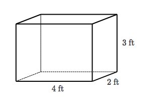

In this section we will be looking and volume and surface area word problems.
We will begin by defining volume and surface area. Then we will look at some sample problems.
In order to fully grasp the content taught in this tutorial the student must have mastery of a few topics.
Note: These topics are not discussed in detail in this documentation. The student must be proactive in acquiring content not covered in this doc.
- Basic Multiplication Facts
- Comfortable Multiplying Fractions and Decimals
- Able to find the area of squares, triangles, rectangles, and circles
- Comfortable naming 3-d shapes such as cubes, cylinders, and pyramids
- Willing to search and ask about pre-requisites which are unfamiliar to student
Volume: the measure of the amount of space inside of a solid figure, like a cube, ball, cylinder or pyramid. It's units are always "cubic", that is, the number of little element cubes that fit inside the figure.
See sample problems below.
Surface Area:The total area of the surface of a three-dimensional object.
See sample problems below.
-
Layla wants to build a wooden box with a volume of 45 cubic centimeters. She started with a width of 3 cm, and a height of 3 cm.How long should Layla make the box? -
I bought a box of granola bars at the store that has a volume of 210 cubic centimeters.Which of the following could be the dimensions of my box?a. 15 cm long, 2 cm wide, 7 cm highb. 7 cm long, 3 cm wide, 10 cm highc. 14 cm long, 3 cm wide, 7 cm high
Volume Word Problems
-
At an ice carving competition, each carver starts with a block of ice with the dimensions shown. The block is wrapped in a special reflective material to keep it from melting before the competition starts.How much reflective material is needed to cover the block completely, without any overlaps?